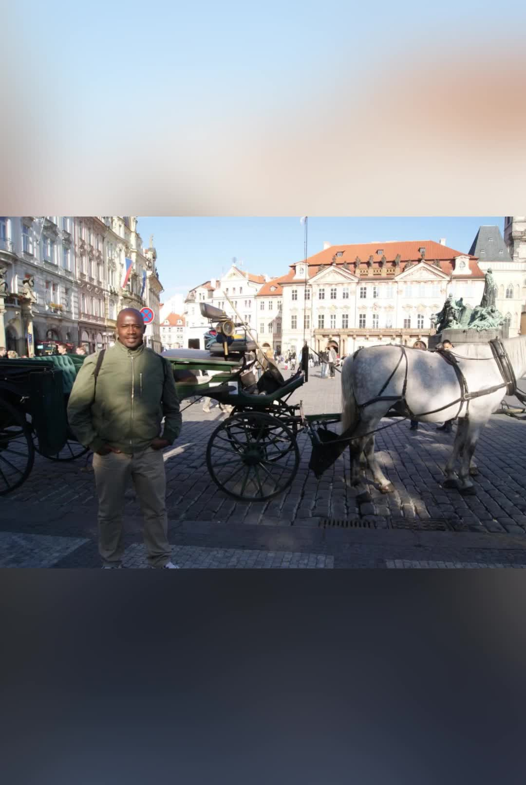

Les rues de la Vieille Ville
Dès les premiers pas, Prague vous avale. Pavés irréguliers, façades pastel, enseignes en fer forgé… On se croirait dans un décor de film.

Maison municipale (Obecní dům) — Náměstí Republiky

Rue Karlova — Vieille Ville, sur l’axe entre la place de la Vieille Ville et le Pont Charles

Place de la Vieille Ville (Staroměstské náměstí) — vue vers Saint-Nicolas et les maisons historiques

Place de la Vieille Ville — calèche touristique devant les façades historiques

Il Commendatore — Ovocný trh, devant le Théâtre des États

Portrait personnel — le lieu exact n’est pas identifiable avec certitude à partir de l’image seule
C’est ici que le voyage commence vraiment. Le bruit des valises sur les pavés, les conversations en dix langues, l’odeur du trdelník…